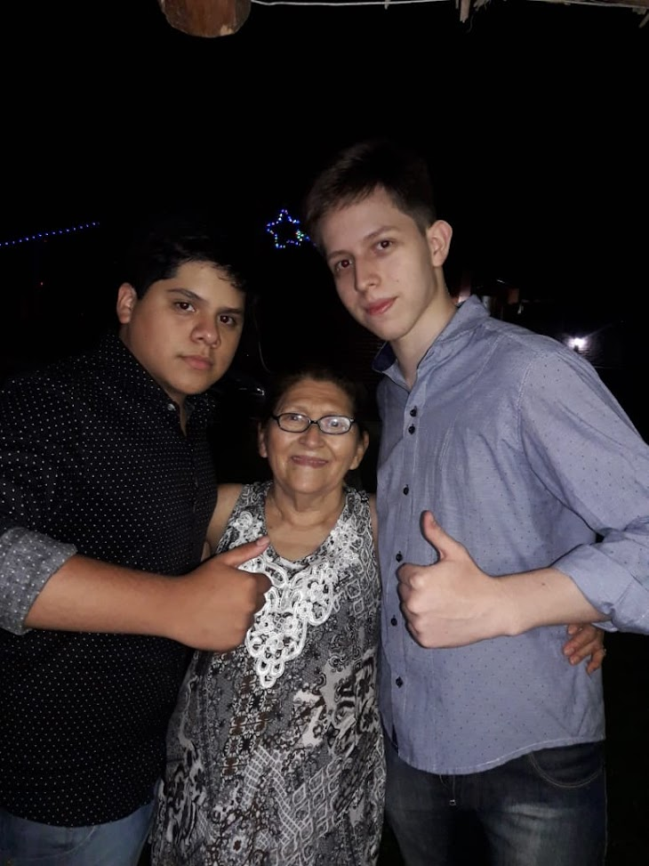

DrChimpXL
Está considerada como una de las bandas más importantes del movimiento contracultural de la década de los 2000 y de la historia de la música.Como pioneros en las formas de grabación, composición y presentación artística; la naturaleza de su enorme popularidad, que había emergido primeramente con la moda de la «chimpmanía», se transformó al tiempo que sus composiciones se volvieron más sofisticadas, revolucionando diversos aspectos de la industria musical y llegando a ser percibidos como la encarnación de los ideales progresistas de las juventudes de la época y sus movimientos sociales y culturales.
Se escuchan en todas las radios de Lima, Perú.
Padres Fundadores
En la foto apreciamos a los fundadores de la banda y su abuela, Lujan Diego y Villanova Franco. Que con tan solo la mayoria de edad lograron acobijarse en los corazones de todos los peruanos.
Para finalizar les queremos dar las gracias a todos los chimpmaniacos y peruanos que han contribuido a la creación de esta banda.